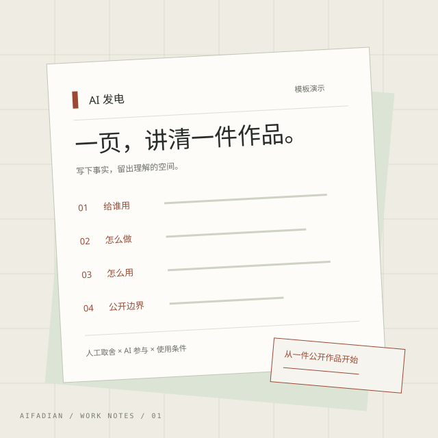

给正在认真做作品的人
把一件 AI 作品，
讲清楚。
作品做完了，说明也值得认真写。
从用途、人工取舍到使用边界，让第一次看到的人知道它是什么、怎么用。
无需注册 · 浏览器内整理 · 可复制或下载

让别人理解作品，
从这三件事开始。
- 01 用途
- 帮谁做什么，输入与输出是什么。
- 02 过程
- 你做了什么取舍，AI 参与了哪一步。
- 03 边界
- 什么已验证，哪些材料可以公开。
01 / 先写下一页
作品说明工作纸
填写六项事实，整理成可带走的文字。
只整理你提供的内容，不调用模型。
适合小工具、自动化、教程与工作流。写清环境和实际验证范围。
02 / 一个正在起步的项目
让创作过程，
也成为作品的一部分。
AI 发电想做一个围绕作品与创作过程的公开空间。先从一页说明开始，看看什么信息真的能帮助别人理解、使用和交流。
本站可整理文字说明。尚无创作者账号、支付、作品托管或云同步；不调用模型。还没有取得展示授权的真实作者作品。
下一步由真实共建反馈决定。示例只说明写法，页面里的版式图不代表客户、用户或合作成果。
03 / 从一次具体合作开始
带一件作品，
一起把它讲清楚。
如果你有一件有权公开的工具、工作流、视觉或视频作品，欢迎先在小红书聊清范围。首轮共建尝试免费整理一页说明草稿，由作者核对事实。
收到双方范围确认后再执行。是否公开、如何署名，由作者决定；不承诺流量、收入或交付工期。
也欢迎相关工具方交流测试资源、复现教程或联合内容。具体资源与交付逐项确认，尚无已达成的赞助合作。
隐私与本地草稿
工作纸在你的浏览器内按固定结构整理。填写内容不会由本工具发送到服务器；只有点击“保存本机草稿”才写入此站点的浏览器存储。恢复与删除由你主动操作，换设备、清理浏览器或更换访问地址可能无法找回。
本站不设置分析统计，不请求外部字体。访问网页时，托管服务可能按其政策记录基本访问日志；通过链接前往小红书后，适用该平台的隐私规则。
使用与公开说明
只填写你有权处理的材料，不填写账号密码、客户隐私或私密提示词。工具不会验证事实或权属，整理结果不等于授权证明。来源、许可或验证状态不清楚时，请保留“待确认”“未验证”。
复制、下载与本地保存都不会公开发布。请先核对事实、素材许可和署名，再决定是否分享。共建邀请需先确认范围，页面示例均为模板演示。